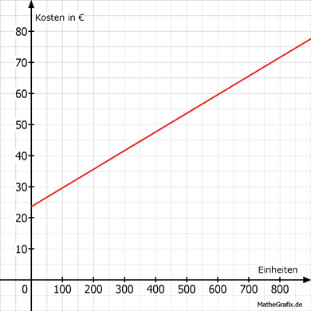

Lineare Funktionen Aufgabe 43 Vor Jahren kostete ein Telefonanschluss 6 Cent pro Einheit und eine Grundgebühr von 23,60 € im Monat. a) Tragen Sie die fehlenden Werte für die Kosten K in € abhängig von den telefonierten Einheiten E ein. b) Wie hoch war die Ersparnis bei 200 Einheiten im Monat, wenn ein Call by Call - Anbieter 4 Cent pro Einheit verlangte? c) Wie groß war bei 300 Einheiten der Unterschied zu einem Anbieter, der 5 Cent pro Einheit und eine Grundgebühr von 28 € verlangte? a) Die Funktionsgleichung für die Abhängigkeit der Kosten K von den Einheiten E lautet: 6 Cent = 0,06 € K = 0,06 * E + 23,60 E K 400 800 47,60 71,60 K(400) = 0,06 * 400 + 23,60 = 47,60 € K(800) = 0,06 * 800 + 23,60 = 71,60 €  b) K1 = 0,06 * E + 23,60 K2 = 0,04 * E K1(200) = 0,06 * 200 + 23,60 = 35,60 € K2(200) = 0,04 * 200 = 8 € Ersparnis: 35,60 € - 8 € = 27,60 € c) K1 = 0,06 * E + 23,60 K2 = 0,05 * E + 28 K1(300) = 0,06 * 300 + 23,60 = 41,60 € K2(300) = 0,05 * 300 + 28 = 43 € Unterschied: 43 € - 41,60 € = 1,40 €